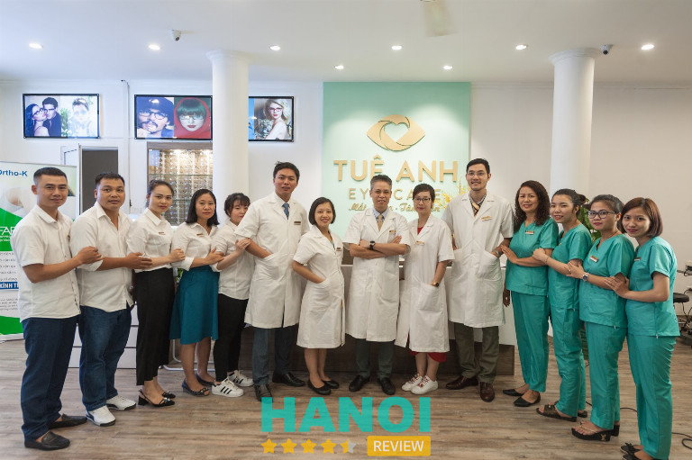
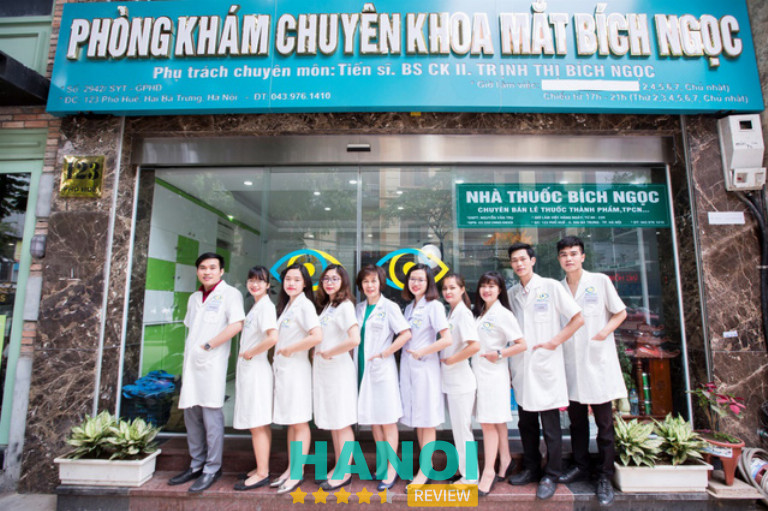
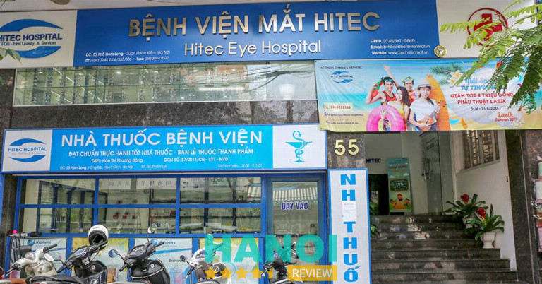
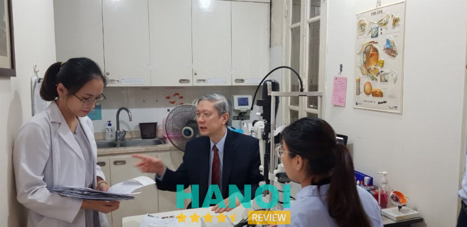
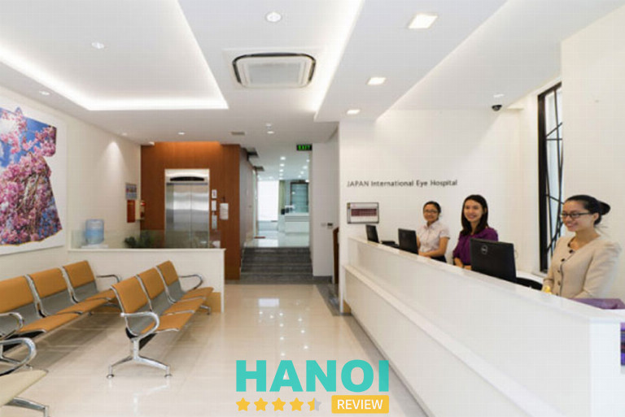
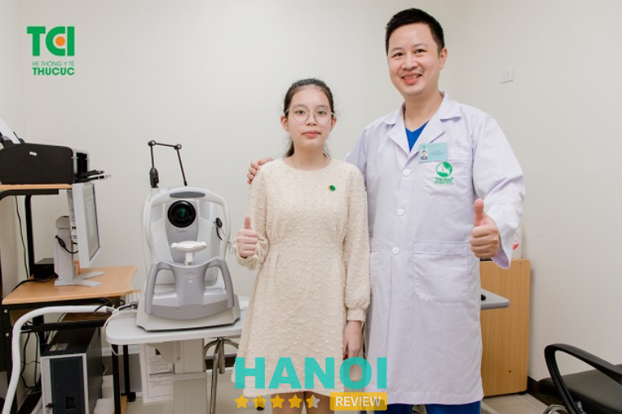
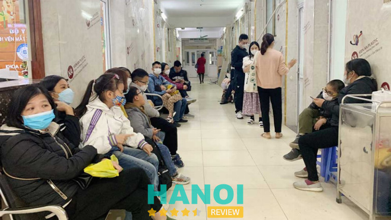

10 Phòng khám mắt tại Hà Nội bác sĩ giỏi, dịch vụ chất lượng
Với đội ngũ bác sĩ giàu kinh nghiệm và được đào tạo chuyên sâu, các phòng khám mắt tại Hà Nội cam kết mang đến sự chăm sóc tốt nhất cho bệnh nhân. Ngoài ra, những phòng khám này còn trang bị các thiết bị hiện đại, đảm bảo chuẩn đoán chính xác và điều trị hiệu quả.
Top 10 Phòng khám mắt tại Hà Nội bác sĩ giỏi, dịch vụ chất lượng
Dịch vụ chuyên nghiệp tại Phòng khám mắt tại Hà Nội luôn mang đến cho bệnh nhân sự an tâm và tin cậy, để lại ấn tượng tích cực cho tất cả mọi người đến điều trị.
Hôm nay HaNoiReview sẽ tổng hợp thông tin về 10 Phòng khám mắt tại Hà Nội bác sĩ giỏi, dịch vụ chất lượng, được nhiều người lựa chọn.
Phòng khám mắt Tuệ Anh
Được thành lập 2009 dưới tên gọi ban đầu là phòng khám Mắt Thành An và từ tháng 1/2019 đã đổi tên thành Phòng khám mắt Tuệ Anh. Phòng khám luôn đặt tiêu chí lấy bệnh nhân làm trọng tâm trong mọi hoạt động nhằm mang lại sự tin tưởng và hài lòng cho khách hàng.
Với hơn 10 năm kinh nghiệm trong lĩnh vực điều trị các bệnh về mắt, đội ngũ y bác sĩ và nhân viên phòng khám Mắt Tuệ Anh luôn nỗ lực cao nhất để đảm bảo chất lượng, hiệu quả trong việc điều trị.

Phòng khám mắt Tuệ Anh chuyên về điều trị tật khúc xạ bằng công nghệ cao, bệnh lý thủy tinh thể và glaucoma, bệnh lý dịch kính võng mạc, bệnh lý mi mắt, giác mạc, viêm màng bồ đào, những bệnh mắt mãn tính khác.
Phương pháp điều trị cận, loạn, viễn thị Ortho K an toàn, hiệu quả không cần phẫu thuật, phù hợp cho cả người lớn và trẻ em. Phương pháp Ortho K được FDA (Cục quản lý Thực phẩm và Dược phẩm Mỹ) và CE (Ủy ban Châu Âu) phê duyệt và cho phép sử dụng rộng rãi trên 56 quốc gia từ năm 2002. Đây là một phương pháp điều trị tật khúc xạ an toàn, hiệu quả, không cần phẫu thuật, phù hợp với mọi lứa tuổi, đặc biệt là các bạn 7 – 21 tuổi.
Các bác sĩ kinh nghiệm tại đây đã đồng hành cùng hơn trăm nghìn bệnh nhân từ khắp các tỉnh thành. Đặc biệt, không ít bệnh nhân từ xa như TP. HCM và Miền Tây Nam Bộ đến Hà Nội để được chăm sóc và điều trị tại phòng khám Tuệ Anh, nhằm đạt hiệu quả điều trị tốt nhất.
Ngoài ra, Tuệ Anh đã thiết lập các mối quan hệ chuyên môn với các chuyên gia Nhãn Khoa hàng đầu Châu Á tại Hàn Quốc, Thái Lan và Singapore. Điều này cho phép Tuệ Anh liên hệ và chuyển tiếp những trường hợp bệnh nhân muốn điều trị ở nước ngoài đến các chuyên gia phù hợp.
Phòng khám mắt Tuệ Anh hoạt động từ thứ hai đến thứ sáu từ 8h00 đến 21h00, thứ bảy và chủ nhật từ 8h00 – 17h00.
Thông tin liên hệ:
- Địa chỉ: 104 Phố Huế, quận Hai Bà Trưng, Hà Nội
- Điện thoại: 024 7776 6656
- Email: info@tueanh.vn
- Website: tueanh.vn
- Fanpage: FB.com/mattueanh
Xem thêm thông tin về: 10 Phòng khám Răng Hàm Mặt tại Hà Nội uy tín, dịch vụ đa dạng
Phòng khám mắt Thu Hà
Với hơn 25 năm kinh nghiệm trong lĩnh vực khám chữa bệnh và chăm sóc mắt, đã xây dựng uy tín là điểm đến tin cậy của nhiều bệnh nhân. Đội ngũ bác sĩ đến từ các bệnh viện mắt hàng đầu trung ương cam kết mang đến dịch vụ khám và tư vấn chất lượng cao, đặc biệt trong lĩnh vực chuyên khoa mắt.
Phòng khám mắt Thu Hà cung cấp dịch vụ khám mắt toàn diện và trọn gói, bắt đầu kiểm tra thị lực, khám bác sĩ chuyên khoa, cấp thuốc, đến việc cắt kính nếu cần thiết. Với hệ thống trang thiết bị hiện đại và đội ngũ nhân viên nhiệt tình, thân thiện, chúng tôi cam kết mang lại sự thoải mái, an tâm và tin tưởng tuyệt đối cho khách hàng.
Dịch vụ khám và chăm sóc đều được cung cấp đa dạng với các bệnh mắt cận thị, loạn thị, viễn thị,… Các bác sĩ tại đây cung cấp các giải pháp chăm sóc hiệu quả giúp bệnh nhân điều trị hiệu quả, tránh tái phát bệnh.
Bên cạnh đó, Phòng khám mắt Thu Hà còn điều trị các bệnh khác như tật khúc xạ, bệnh Glocom, khám mắt toàn diện, điều trị bệnh võng mạc đái tháo đường.
Với gần 30 năm kinh nghiệm, đội ngũ chuyên viên của Phòng khám mắt Thu Hà là lựa chọn đáng tin cậy cho nhiều thế hệ khách hàng và là đối tác hàng đầu của nhiều tập đoàn và công ty kính mắt hàng đầu tại Việt Nam. Các sản phẩm này được nhập khẩu từ các nhà cung cấp uy tín trên thế giới như Nhật Bản, Pháp, Thái Lan, Hàn Quốc.
Phòng khám mắt Thu Hà hoạt động từ thứ hai đến chủ nhật từ 8h00 đến 20h00.
Thông tin liên hệ:
- Địa chỉ: 134 Bà Triệu, Nguyễn Du, Quận Hai Bà Trưng, Hà Nội
- Điện thoại: 0908 134 140
- Email: phongkham.kmth@gmail.com
- Website: khammatthuha.vn
- Fanpage: FB.com/khammatthuha/
Phòng khám mắt Bích Ngọc
Với danh tiếng và uy tín hàng đầu tại Hà Nội, Phòng khám mắt Bích Ngọc là điểm đến được nhiều bệnh nhân lựa chọn. Phòng khám tại đây luôn tiên phong áp dụng những thành tựu của y khoa tiên tiến cả trong nước và trên thế giới.
Đội ngũ chuyên gia và y bác sĩ tại Phòng khám mắt Bích Ngọc đều là những người có kinh nghiệm nhiều năm trong việc điều trị các bệnh về mắt. Đặc Biệt, TS.BSCK II Trịnh Thị Bích Ngọc, nguyên Phó Giám Đốc Bệnh Viện Mắt Hà Nội, là bác sĩ chính đứng đầu đội ngũ, trực tiếp thực hiện các cuộc khám và điều trị về mắt.

Với hơn 30 năm hoạt động, Phòng khám mắt Bích Ngọc đã phục vụ cho hơn một triệu bệnh nhân, xây dựng niềm tin từ hàng triệu người khi đến khám mắt.
Phòng khám cung cấp nhiều dịch vụ chăm sóc mắt chất lượng trong đó bao gồm: Chụp đáy mắt màu, nặn tuyến bờ mi, chắp lẹo mắt, tập nhược thị, đo nhãn áp, lấy dị vật, bơm thông rửa lệ đạo, siêu âm mắt, đo khúc xạ, chụp đáy mắt màu,…
Bên cạnh đó, tại đây còn cung cấp rất nhiều các sản phẩm thuốc điều trị, thuốc bổ mắt, và nhiều dụng cụ vệ sinh cung cấp cho bệnh nhân sử dụng sau quá trình điều trị.
Phòng khám mắt Bích Ngọc hoạt động từ thứ hai đến chủ nhật từ 8h00 đến 12h00, chiều từ 16h00 – 20h00.
Thông tin liên hệ:
- Địa chỉ: 123 Phố Huế, Phường Ngô Thì Nhậm, Quận Hai Bà Trưng, Hà Nội
- Điện thoại: 024 3976 1410
- Email: matbichngoc@gmail.com
- Website: matbichngoc.vn
- Fanpage: FB.com/matbichngoc
Xem thêm thông tin về: 10 Phòng khám chữa viêm nha chu tại Hà Nội chất lượng tốt nhất
Phòng khám Bệnh viện mắt Hà Nội 2
Được thành lập từ 2017, Phòng khám Bệnh viện mắt Hà Nội 2 quy tụ đội ngũ y bác sĩ chuyên môn hàng đầu Việt Nam. Với tiêu chuẩn quản lý chất lượng HAS nghiêm ngặt và là cơ sở thực hành của Đại học Y Hà Nội, thực hiện đào tạo bác sĩ, chuyên gia nhãn khoa cho cả nước.
Với định hướng phát triển mạnh mẽ, phòng khám Bệnh viện mắt Hà Nội 2 liên tục cập nhật các trang thiết bị y tế tân tiến nhất thế giới, giúp điều trị hầu hết các bệnh về mắt, kể cả các ca khó.
Một số trang thiết bị tiêu biểu như máy phẫu thuật khúc xạ Visumax, Mel 90, Centurion, Lumera 700, Consteratation,… Trong đó còn có hệ thống phòng phẫu thuật áp lực đường, hạn chế tối đa nguy cơ nhiễm trùng trong phẫu thuật.
Các phòng phẫu thuật đều được đảm bảo độ sạch của không khí, hạn chế tối đa vi sinh vật, nấm mốc phát sinh có thể ảnh hưởng đến quá trình làm việc và chất lượng ca phẫu thuật.
Phòng khám Bệnh viện mắt Hà Nội 2 cung cấp một loạt các dịch vụ điều trị mắt chất lượng cao, đảm bảo đáp ứng đầy đủ nhu cầu khám và điều trị của bệnh nhân như: Khám mắt tổng quát, khám mắt chuyên sâu, thăm dò chức năng, điều trị laser, điều trị glaucoma, dịch kính võng mạc, chẩn đoán hình ảnh, nhược thị, kiểm soát cận thị tiến triển,…
Bên cạnh đó tại đây còn cung cấp nhiều sản phẩm kính hỗ trợ cho người cận thị, điều trị Ortho K điều trị kính tiếp xúc mềm, cứng.
Phòng khám Bệnh viện mắt Hà Nội 2 hoạt động từ thứ hai đến chủ nhật từ 7h30 đến 12h00, chiều từ 13h00 – 18h00.
Thông tin liên hệ:
- Địa chỉ: 72 Đường Nguyễn Chí Thanh, Láng Thượng, Quận. Đống Đa, Hà Nội
- Điện thoại: 1900 27 7227
- Email: tuvan@mathanoi2.vn
- Website: mathanoi2.vn
- Fanpage: FB.com/benhvienmathanoi2
Phòng khám Bệnh viện mắt Công nghệ cao HITEC
HITEC trang bị đầy đủ các trang thiết bị hiện đại, cung cấp dịch vụ chăm sóc sức khỏe mắt chất lượng cao, hiệu quả nhất tại Hà Nội. Được thành lập với sứ mệnh cung cấp dịch vụ chăm sóc mắt chất lượng cao, tại đây đã nhanh chóng khẳng định vị thế của mình trong lĩnh vực điều trị các bệnh về mắt.
Phòng khám Bệnh viện mắt Công nghệ cao HITEC sở hữu hệ thống cơ sở vật chất và trang thiết bị hiện đại nhất, giúp bác sĩ chẩn đoán và điều trị các vấn đề về mắt một cách chính xác và hiệu quả.
Các thiết bị như TRC-NW8F Non-Mydriatic Retinal Camera, DRI OCT Triton, Aladdin Biometer và nhiều máy móc khác đều được tích hợp để đáp ứng mọi nhu cầu khám và điều trị.

HITEC sử dụng những phương pháp điều trị tiên tiến nhất với phẫu thuật Lasik với Wavelight Allegretto Wave Eye-Q và máy mổ laser LenSx không dùng giao là những công nghệ mới nhất được áp dụng, giúp cải thiện thị lực một cách an toàn chính xác.
Phòng khám Bệnh viện mắt Công nghệ cao HITEC là một trong số ít cơ sở y tế tại Việt Nam áp dụng tiêu chuẩn quản lý chất lượng HAS nghiêm ngặt bậc nhất thế giới. Điều này đảm bảo sự an toàn và chất lượng trong quá trình cung cấp dịch vụ.
Với những ưu điểm nổi bật trên, HITEC không chỉ là nơi cung cấp dịch vụ chăm sóc mắt hàng đầu mà còn là đối tác đáng tin cậy của bệnh nhân trong việc duy trì và nâng cao sự khỏe đẹp của đôi mắt.
Phòng khám Bệnh viện mắt Công nghệ cao HITEC hoạt động từ thứ hai đến thứ sáu từ 7h30 đến 12h00, chiều từ 13h00 – 17h00, thứ bảy và chủ nhật mở cửa từ sáng 7h30 – 12h00, chiều 13h30 – 18h00.
Thông tin liên hệ:
- Địa chỉ: 55 Hàm Long, Quận Hoàn Kiếm, Hà Nội
- Điện thoại: 024 777 86868
- Email: cskh@benhvienmat.vn
- Website: benhvienmat.vn
- Fanpage: FB.com/hethongbenhvienmathitec
Xem thêm thông tin về: 5 Phòng khám nha khoa chữa tủy răng tại Hà Nội uy tín nhất
Phòng khám Bệnh viện mắt Việt Nhật
Phòng khám Bệnh viện mắt Việt Nhật do bác sĩ nhãn khoa người Nhật bản sáng lập, mang đến cho bệnh nhân dịch vụ chăm sóc sức khỏe mắt hiệu quả. Không gian tại đây được thiết kế rộng thoáng, đảm bảo từng khu vực khám chữa bệnh đều có đầy đủ các dịch vụ y tế phục vụ cho bệnh nhân.
Đội ngũ chuyên gia được đào tạo chuyên sâu, có nhiều kinh nghiệm trong việc điều trị hầu hết các bệnh về mắt, được nhiều người đánh giá cao.

Các dịch vụ khám và điều trị tại Phòng khám Bệnh viện mắt Việt Nhật bao gồm:
Khám và điều trị Đa khoa chuyên sâu và Thẩm mỹ về mắt: Tại đây cung cấp các dịch vụ khám và điều trị chuyên sâu về mắt, bao gồm cả các phương pháp thẩm mỹ nhằm cải thiện ngoại hình mắt.
Khám và điều trị bệnh mắt trẻ em, lác mắt và nhược thị: Đội ngũ chuyên gia tại đây đều là những người tận tâm trong việc chăm sóc sức khỏe mắt trẻ em, đồng thời còn điều trị các vấn đề như lác mắt nhược thị và nhiều bệnh lý nặng nhẹ về mắt khác.
Phát hiện sớm và điều trị các bệnh liên quan đến mắt: Phòng khám bệnh viện hỗ trợ trong việc phát hiện sớm và điều trị tật khúc xạ, võng mạc đái tháo đường, glocom và các vấn đề viêm nhiễm, xuất huyết ở mắt.
Hợp tác với chuyên gia trong và ngoài nước: Phòng khám bệnh viện kết hợp chặt chẽ với các chuyên gia trong và ngoài nước để đảm bảo chất lượng cao nhất trong quá trình hội chuẩn và điều trị.
Phẫu thuật điều trị mắt: Phòng khám bệnh viện các ca phẫu thuật như điều trị tật khúc xạ, đục thủy tinh thế, mộng, quặm, lác sụp mi và phẫu thuật thẩm mỹ mắt.
Phòng khám Bệnh viện mắt Việt Nhật cung cấp quá trình chăm sóc y tế chất lượng, ưu đãi, tiện ích đặc biệt từ các chế độ bảo hiểm.
Thông tin liên hệ:
- Địa chỉ: 122 Triệu Việt Vương, Phường Bùi Thị Xuân, Quận Hai Bà Trưng, Hà Nội
- Điện thoại: (04) 3974 8307
- Email: info@matvietnhat.com.vn
- Website: matvietnhat.com.vn
Phòng khám Bệnh viện mắt Nhật Bản – JIEH
JIEH là đơn vị chuyên khoa mắt đầu tiên tại Việt Nam được đầu tư bởi tập đoàn Paris Miki Holdings Nhật Bản. Với sự mệnh mang đến cho người dân Việt Nam những dịch vụ chăm sóc sức khỏe chất lượng cao, JIEH đã không ngừng phát triển và trở thành một trong những bệnh viện mắt được nhiều người lựa chọn.
Phòng khám Bệnh viện mắt Nhật Bản được xây dựng theo tiêu chuẩn của một bệnh viện quốc tế chất lượng cao, trang bị hệ thống thiết bị tiên tiến, ngang bằng với các bệnh viện chuyên khoa mắt hàng đầu trên thế giới.

Trong đó tại đây sở hữu hệ thống máy Mel 90 (Carl Zeiss – Đức), máy Visumax, máy Catalys (Alcon – Mỹ), Phakic ICL (Staar Surgical – Mỹ) giúp nhiều bệnh nhân điều trị an toàn, hiệu quả, đạt chất lượng cao.
Đội ngũ bác sĩ nhãn khoa giàu kinh nghiệm tại JIEH đều được đào tạo chuyên sâu về việc điều trị các bệnh từ nhẹ đến nặng về mắt. Với mục tiêu nâng cao chất lượng khám chữa bệnh, các bác sĩ điều trị tối ưu cho người bệnh.
Bên cạnh đó tại đây còn thường xuyên cập nhật các công nghệ, phương pháp điều trị mới trong nhãn khoa thông qua các khóa đào tạo, các hội thảo trong nước và quốc tế.
Không chỉ như vậy JIEH cung cấp đa dạng các dịch vụ chăm sóc sức khỏe như: Khám và điều trị các bệnh về tật khúc xạ, đục thủy tinh thể, glocom, bệnh về võng mạc, thị lực kém, nhìn mờ,… Phòng khám Bệnh viện mắt Nhật Bản JIEH hoạt động từ thứ hai đến chủ nhật từ 7h30 đến 12h00, chiều từ 13h00 – 17h00.
Thông tin liên hệ:
- Địa chỉ: 32 Phó Đức Chính, Quận Ba Đình, Hà Nội
- Điện thoại: 0902 242 291
- Email: info@jieh.vn
- Website: jieh.vn
- Fanpage: FB.com/JIEH32PDC
Xem thêm thông tin về: 5 Phòng khám tim mạch tại Hà Nội hiện đại, dịch vụ tốt nhất
Phòng khám Bệnh viện mắt Quốc tế Việt Nga
Phòng khám Bệnh viện mắt Quốc tế Việt Nga được thành lập trong chương trình hợp tác Nhãn Khoa Việt Nam – Liên bang Nga. Bộ Y Tế của cả hai nước đã ký kết hiệp định thành lập bệnh viện này vào tháng 12/4/2007.
Được công nhận là trung tâm phẫu thuật xóa cận Relex Smile hàng đầu không chỉ tại Việt Nam mà còn trên toàn khu vực Đông Nam Á, đã thu hút được sự tin tưởng của hàng nghìn bệnh nhân trong suốt nhiều năm qua.
Tại đây cung cấp đa dạng dịch vụ điều trị và chăm sóc mắt bao gồm: Điều trị tật khúc xạ phẫu thuật Lasik, PRK và phacoemulsification để giúp bệnh nhân khắc phục tình trạng mắt cận.
Bên cạnh đó còn chữa trị các bệnh về thể thủy tinh, glaucoma, khám bệnh mắt nhi, khắc phục các vấn đề như mí mắt kép, mắt rách, hay mắt bị teo. Ngoài ra, tại đây còn cung cấp các dịch vụ tạo hình thẩm mỹ như phẫu thuật chỉnh hình mí mắt.
Phòng khám bệnh viện được hỗ trợ bởi đội ngũ y bác sĩ người Nga có trình độ chuyên môn cao và kinh nghiệm trong lĩnh vực điều trị bệnh về mắt. Cơ sở còn sử dụng các thiết bị hiện đại và tuân thủ quy trình chuẩn quốc tế để đảm bảo chất lượng, an toàn cho bệnh nhân.
Ngoài ra, phòng khám còn chú trọng vào việc giáo dục và tư vấn về chăm sóc mắt hàng ngày và các biện pháp phòng ngừa bệnh mắt. Các bác sĩ đảm bảo rằng mỗi bệnh nhân được thông tin đầy đủ về các vấn đề về mắt và biết cách duy trì sức khỏe mắt trong cuộc sống hằng ngày.
Phòng khám Bệnh viện mắt Quốc tế Việt Nga là một địa chỉ đáng tin cậy cho những ai quan tâm đến sức khỏe mắt và mong muốn nhận được sự chăm sóc chuyên nghiệp và tận tâm từ đội ngũ y tế.
Thông tin liên hệ:
- Địa chỉ: Nhà C2, Làng Quốc Tế Thăng Long, Dịch Vọng, quận Cầu Giấy, Hà Nội
- Điện thoại: 096 988 88 01
- Email: kinhdoanhhn@vietngagroup.vn
- Website: matvietnga.com
- Fanpage: FB.com/benhvienmatquoctevietnga
Hệ thống Phòng khám Y tế Thu Cúc
Hệ thống Y tế Thu Cúc TCL cung cấp đầy đủ các dịch vụ khám và điều trị bệnh lý về mắt, mang đến dịch vụ khám đa dạng các loại bệnh lý về mắt. Không chỉ là cơ sở Y khoa hàng đầu tại Hà Nội, Thu Cúc còn là nơi quy tụ nhiều đội ngũ y bác sĩ, chuyên gia được đào tạo chuyên sâu trong việc điều trị các chứng bệnh nặng nhẹ ở mắt.
Chuyên khoa mắt Hệ thống Y tế Thu Cúc được đầu tư nhiều hệ thống trang thiết bị hiện đại, được nhập khẩu từ nhiều nước trên thế giới. Bệnh nhân đến khám mắt tại Thu Cúc sẽ được các bác sĩ hướng dẫn về quá trình điều trị bằng các thiết bị công nghệ cao giúp nâng cao hiệu quả trong việc điều trị và an toàn tuyệt đối.

Hệ thống Phòng khám Y tế Thu Cúc, chuyên khoa mắt chuyên điều trị về các bệnh lý mi mắt, chắp, lẹo, viêm tấy lan tỏa mi, dị ứng hoặc do độc tố của côn trùng. Bên cạnh đó còn điều trị cho bệnh lý lệ đạo, bệnh kết mạc, bệnh giác mạc, khô mắt, màng bồ đào, thể thủy tinh, glocom, dịch kính,…
Chuyên khoa mắt Hệ thống Y tế Thu Cúc cung cấp gói khám mắt trẻ em (5 – 16 tuổi), Gói khám mắt người lớn cơ bản/nâng cao, gói khám mắt cho người đái tháo đường/huyết áp, gói khám mắt võng mạc thai nghén, gói khám mắt Ortho K.
Với phẫu thuật các chuyên gia sẽ thực hiện nhanh không đau, không chảy máu, vết mổ nhỏ, không cần khâu, không nằm viện, phẫu thuật về ngay trong ngày, an toàn không gây biến chứng.
Chuyên khoa mắt Hệ thống Y tế Thu Cúc TCL là địa chỉ uy tín để mọi người lựa chọn khi cần chăm sóc sức khỏe mắt. Với hệ thống trang thiết bị hiện đại, dịch vụ chăm sóc sức khỏe mắt chất lượng cao, bệnh nhân sẽ nhận được nhiều ưu đãi, điều trị một cách hiệu quả nhất.
Thông tin liên hệ:
- Địa chỉ: 286 Thụy Khuê, Quận Tây Hồ, Hà Nội
- Điện thoại: 1900 5588 92
- Email: cskh@thucuchospital.vn
- Website: benhvienthucuc.vn
- Fanpage: FB.com/benhvienthucuc.vn
Xem thêm thông tin về: 5 Phòng khám nha khoa ở Q. Ba Đình, Hà Nội cơ sở hiện đại, giá tốt
Phòng khám bệnh viện Mắt Trung Ương
Bệnh viện Mắt Trung Ương chuyên điều trị các bệnh lý liên quan đến mắt, trong đó bao gồm cả dịch kính võng mạc, giác mạc glocom, chữa trị các bệnh mắt trẻ em,… Một số trang thiết bị hiện đại của cơ sở bao gồm:
Hệ thống máy chụp cắt lớp quang học võng mạc OCT, máy chụp mạch huỳnh quang, máy chụp cắt lớp vi tính và chụp cộng hưởng từ (MRI), máy phẫu thuật Phaco, máy Lasik,…
Tất cả đều là những máy móc hiện đại được nhập khẩu từ nhiều nước trên thế giới. Bệnh nhân khi điều trị mắt sẽ được các thiết bị máy móc này hỗ trợ điều trị một cách nhanh chóng, an toàn, hiệu quả, tránh những biến chứng, tác dụng phụ về sau.

Phòng khám bệnh viện Mắt Trung Ương còn là nơi quy tụ đội ngũ bác sĩ nhãn khoa giàu kinh nghiệm, chuyên môn cao và được đào tạo bài bản nhiều năm. Các bác sĩ tại đây đều được đào tạo tại các trường đại học, viện nghiên cứu uy tín trong và ngoài nước, điều trị cho nhiều bệnh nhân, điều trị bệnh lý về mắt.
Bên cạnh đó, đội ngũ bác sĩ của Phòng khám bệnh viện Mắt Trung Ương cũng thường xuyên được tham gia các khóa đào tạo, hội thảo trong và ngoài nước để cập nhật các kiến thức, kỹ thuật mới trong lĩnh vực nhãn khoa, nhằm mang đến cho bệnh nhân hiệu quả điều trị tốt nhất.
Với hệ thống đồng bộ, đội ngũ bác sĩ chuyên gia giàu kinh nghiệm, Phòng khám bệnh viện Mắt Trung Ương là địa chỉ uy tín để mọi người lựa chọn khi cần thăm khám và điều trị bệnh nặng nhẹ về mắt.
Thông tin liên hệ:
- Địa chỉ: 85 Phố Bà Triệu, Phường Nguyễn Du, Quận Hai Bà Trưng, Hà Nội
- Điện thoại: 024 3826 3966
- Email: bvmtw@vnio.vn
- Website: vnio.vn
Top 5 Lưu ý khi chọn Phòng khám mắt tại Hà Nội
Có một số lưu ý quan trọng giúp đảm bảo nhận được dịch vụ khám mắt, chăm sóc chất lượng. Dưới đây là 5 lưu ý khi bạn lựa chọn phòng khám mắt:
Đánh giá uy tín và kinh nghiệm: Kiểm tra đánh giá từ bệnh nhân trước đó để đo lường uy tín của phòng khám. Mọi người có thể tìm đọc trên các trang báo, các website trực tuyến của phòng khám để xem xét nhiều thông tin về cơ sở cũng như kinh nghiệm, quá trình hoạt động,…
Trang thiết bị: Khi lựa chọn phòng khám mắt, bạn cần lưu ý đến hệ thống trang thiết bị của phòng khám, các trang thiết bị cần thiết cho việc khám và điều trị các bệnh lý mắt.
Đội ngũ bác sĩ: Bạn cần tìm hiểu kỹ về phòng khám, cần lưu ý đến đội ngũ bác sĩ. Mọi người nên lựa chọn phòng khám có nhiều bác sĩ có chuyên môn cao, điều trị nhiều loại bệnh nặng về mắt.
Chi phí khám chữa bệnh: Mọi người nên cân nhắc lựa chọn các phòng khám có chi phí điều trị hợp lý với kinh tế. Bảng giá tham khảo của các dịch vụ phòng khám thường được niêm yết trên các trang truyền thông của đơn vị, mọi người có thể tìm hiểu và dễ dàng lựa chọn.
Phản hồi của bệnh nhân: Bạn có thể tham khảo phản hồi của bệnh nhân đã từng khám và điều trị tại phòng khám để có cái nhìn khách quan, chất lượng dịch vụ.
Trên đây là 5 Lưu ý khi chọn Phòng khám mắt tại Hà Nội. Hy vọng những thông tin này sẽ giúp bạn lựa chọn được phòng khám mắt uy tín và chất lượng nhất để điều trị.
Có thể bạn quan tâm
- 5 Phòng khám nha khoa tại Q. Hoàn Kiếm, Hà Nội chất lượng đi đầu
- 10 Phòng khám Răng Hàm Mặt tại Hà Nội uy tín, dịch vụ đa dạng
- 10 Phòng khám Nha khoa tại Hà Nội cơ sở lớn, uy tín, BS giỏi
- 5 Địa chỉ phẫu thuật gọt hàm tại Hà Nội được review tốt nhất
DOANH NGHIỆP: Đăng tải thông tin MIỄN PHÍ.
Tin đọc nhiều


10 Địa chỉ khám bệnh bằng YHCT Đông Y ở Hà Nội chất lượng
Chữa bệnh bằng thuốc Đông Y là phương pháp được nhiều người tin tưởng áp dụng từ xưa đến nay, hôm nay HaNoiReview sẽ thông...
10 Địa chỉ châm cứu bấm huyệt tại Hà Nội uy tín, bác sĩ giàu...
Cơ thể nhức mỏi và bạn đang tìm kiếm một cơ sở châm cứu bấm huyệt tại Hà Nội uy tín, bác sĩ kinh nghiệm...
10 Phòng khám thai tại Hà Nội bác sĩ tận tâm, dịch vụ tốt
Tìm kiếm phòng khám thai ở Hà Nội chất lượng là một điều rất quan trọng, bởi khám thai trong quá trình này giúp theo...

5 Phòng khám tai mũi họng ở Hà Nội chất lượng, dịch vụ tốt
Ngày nay, các phòng khám Tai Mũi Họng tại Hà Nội xuất hiện rất nhiều, việc lựa chọn được một địa chỉ đáng tin cậy...

Trở thành người đầu tiên bình luận cho bài viết này!